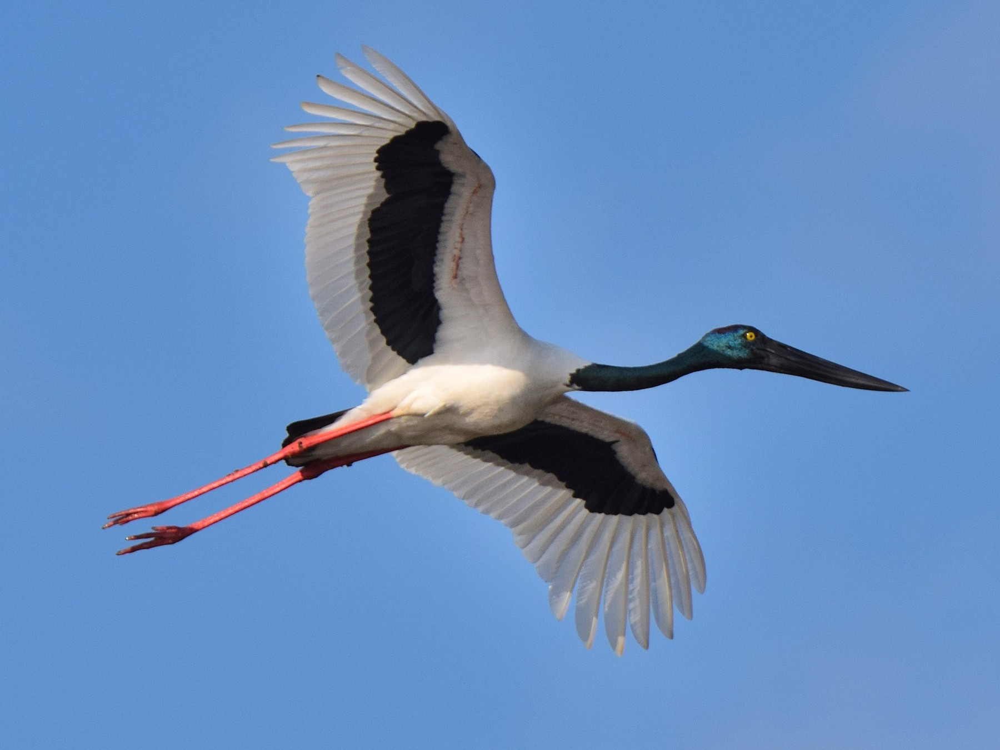
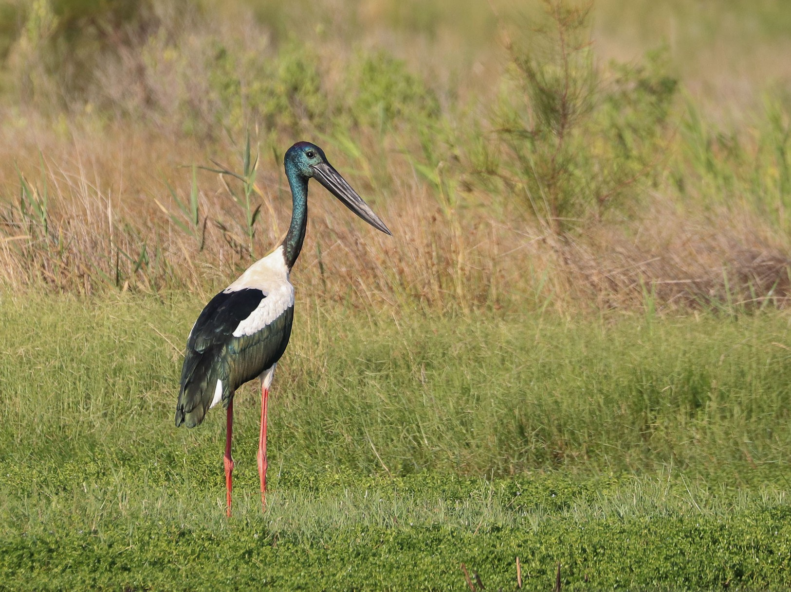
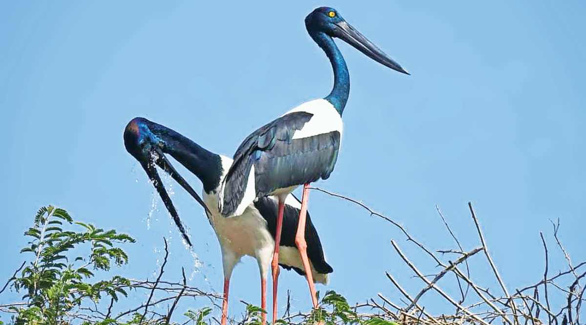
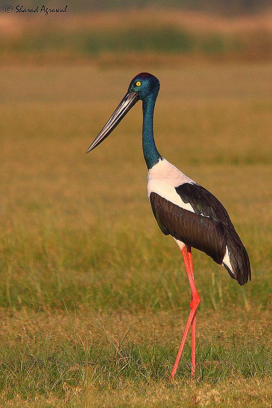
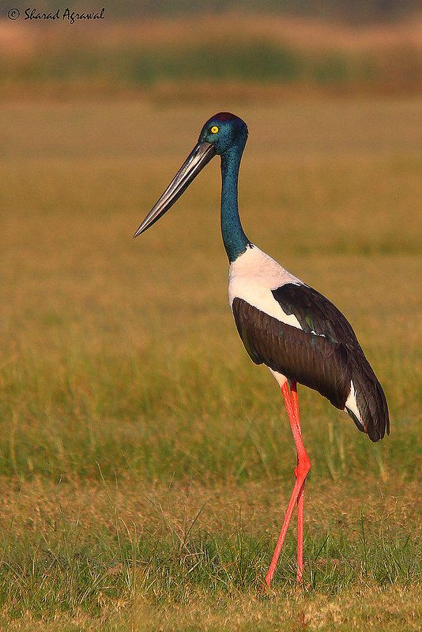

Black Necked Stork
The black-necked stork (Ephippiorhynchus asiaticus) is a tall long-necked wading bird in the stork family. It is a resident species across the Indian Subcontinent and Southeast Asia with a disjunct population in Australia. It lives in wetland habitats and near fields of certain crops such as rice and wheat where it forages for a wide range of animal prey. Adult birds of both sexes have a heavy bill and are patterned in white and irridescent blacks, but the sexes differ in the colour of the iris with females sporting yellow irises and males having dark-coloured irises. In Australia, it is sometimes called a jabiru although that name refers to a stork species found in the Americas. It is one of the few storks that is strongly territorial when feeding and breeding.
Black Necked Stork are found in Sultanpur Bird Sanctuary. Other birds such as Cattle Egret, Rose Ringed Parakeet, etc are also seen in Sultanpur Bird Sanctuary.



 
